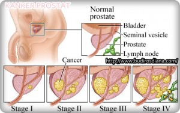

Doctors assign the stage of the cancer by combining the T, N, and M classification. See the table below the stage descriptions for all of the TNM combinations for each stage.
Stage I Prostate Cancer: Stage I: Cancer is found in the prostate only, usually during another medical procedure. It cannot be felt during the DRE or seen on imaging tests. A stage I cancer is usually made up of cells that look more like healthy cells and is usually slow growing.
Stage IIA Prostate Cancer: Stage IIA and IIB: This stage describes a tumor that is too small to be felt or seen on imaging tests. Or, it describes a slightly larger tumor that can be felt during a DRE. The cancer has not spread outside of the prostate gland, but the cells are usually more abnormal and may tend to grow more quickly. A stage II cancer has not spread to lymph nodes or distant organs.
Stage III: The cancer has spread beyond the outer layer of the prostate into nearby tissues. It may also have spread to the seminal vesicles.
Stage I Prostate Cancer: Stage IV: This stage describes any tumor that has spread to other parts of the body, such as the bladder, rectum, bone, liver, lungs, or lymph nodes.
Stage IV Prostate Cancer Recurrent: Recurrent prostate cancer is cancer that has come back after treatment. It may come back in the prostate area again or in other parts of the body. If the cancer does return, there will be another round of tests to learn about the extent of the recurrence. These tests and scans are often similar to those done at the time of the original diagnosis.